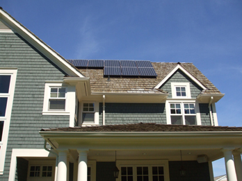
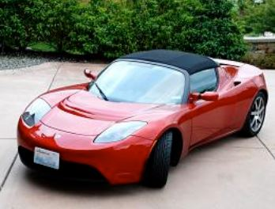

Getting Greener conducted a green audit for a family of five that lives east of Seattle. Getting Greener found that the homeowner used more electricity than the average household. We recommended that they install solar panels to provide all of their electrical energy. Any additional energy produced by the panels could be sold back to the public utility company. The homeowners also invested in an electric car that runs on the solar electric energy provided by the panels.
This homeowner:
- Installed solar panels
- Bought an electric car
Solar Panels
As you can see in the picture on the left, photovoltaic solar panels are installed on the roof of the home. The panels face south to get the most sunshine possible throughout the day. The green audit showed us how many panels the home needed, based on the family's average electricity consumption. This family's consumption includes an energy-efficient furnace and air conditioner, energy-efficient appliances, energy-efficient windows and doors, and energy-efficient lightbulbs throughout the house. Additionally, the entire family is energy aware and responsible.
Electric Car
The homeowners also invested in an electric car to make their lives more green. The car is plugged into an outlet in the garage, so the power needed to run the car comes completely from the solar panels mentioned above. There are many energy efficient cars on the market today. Some states have tax incentives for people who buy these cars. Review reports online to see which car might best suit your needs.
- Approximate annual savings is $6,087 over gas-fueled vehical
- Cra gets 244 miles per charge
- Homeowner can travel to Seattle daily for weeks on one charge
- Car is styleish
- Savings begin immediatley